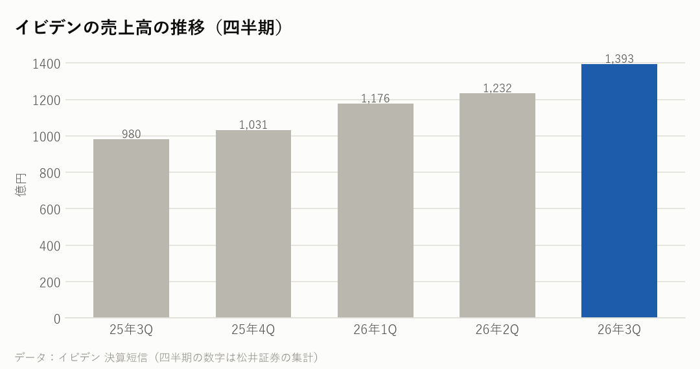
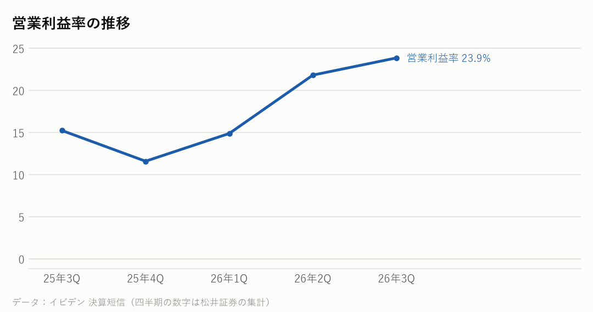

4062｜2026年7〜9月期の決算｜決算発表 2026年10月29日
イビデンの決算：売上42%増、営業利益は2.2倍。通期予想を再び引き上げ
7〜9月期の売上高は前年同期比42%増の1,393億円、営業利益は約2.2倍の332億円だった。AIサーバー向けのパッケージ基板の注文が想定を大きく上回ったと説明し、通期の予想を売上高5,650億円、営業利益1,330億円に引き上げた。8月に続いて2回目の引き上げ。
主な数字（2026年7〜9月期）
| 今回 | 前年同期 | 前年比 | |
|---|---|---|---|
| 売上高 | 1,393億円 | 980億円 | +42.1% |
| 営業利益 | 332億円 | 149億円 | +122.5% |
| 営業利益率 | 23.9% | 15.2% | |
| 純利益 | 207億円 | 93億円 | +121.1% |
事業ごとの売上（4〜9月の上期）
| 部門 | 売上 | 前年比 |
|---|---|---|
| 電子（パッケージ基板など） | 1,725億円 | +52.0% |
| セラミック・その他 | 900億円 | +9.8% |

会社の見通し（2027年3月期・通期、引き上げ）
| 売上高（通期） | 5,650億円（前回 5,500億円） |
|---|---|
| 営業利益（通期） | 1,330億円（前回 1,270億円） |
| 純利益（通期） | 890億円（前回 840億円） |
| 電子事業の営業利益（通期） | 1,140億円（前回 1,100億円） |
- 通期の予想の引き上げは8月に続いて2回目。引き上げの理由に、AIサーバー向けの注文の増加、利益率の高い製品が増えたこと、円安を挙げた。
- 電子事業の通期の予想は、売上高3,850億円、営業利益1,140億円。
もうけの力

日本の半導体関連の会社と比べると
各社の直近の四半期。在庫の日数は「在庫が売上原価の何日分か」。
| 会社 | 決算期末 | 売上高 | 前年比 | 粗利益率 | 営業利益率 | 設備投資/売上 | 在庫の日数 |
|---|---|---|---|---|---|---|---|
| イビデン | 2026-09 | 1,393億円 | +42.1% | ― | 23.9% | ― | ― |
| 東京エレクトロン | 2026-09 | 9,351億円 | +48.4% | 47.8% | 31.6% | ― | ― |
| アドバンテスト | 2026-09 | 4,777億円 | +81.7% | ― | 55.9% | ― | ― |
| キオクシア | 2026-09 | 24,800億円 | +453.2% | ― | 80.4% | ― | ― |
| 村田製作所 | 2026-09 | 5,885億円 | +20.9% | ― | 25.1% | ― | ― |
NasdaqWhy の視点：データから読み取れる注目点
決算資料と各社の公式データを並べて読み取れることです。将来を予想するものではありません。
- 上期の電子事業（パッケージ基板など）の売上は1,725億円で前年同期比52%増、営業利益率は29.0%（前年同期は22.4%）だった。
- 会社は、AIサーバー向けの大きく層の多いパッケージ基板の注文が想定を大きく上回ったと説明した（決算説明より）。
- CPU向けのパッケージ基板を増やすため、約1,510億円の投資を決めた。量産の開始は数年先の計画（報道より）。
- パッケージ基板は、チップを載せて機器の基板とつなぐ部品。サプライチェーンでは素材・部品（レイヤー2）にあたり、後工程でチップと組み合わされる。
- 営業利益率は23.9%で、1年前の15.2%から上がった。
次に確認したい決算・予定
- エヌビディアの決算（11月下旬の見込み）：AIサーバー向けの部品の需要のもとになる。
- インテルの次の決算（2027年1月下旬の見込み）：CPU向けのパッケージ基板の需要。
- イビデンの次の決算（2027年1月下旬〜2月の見込み）：引き上げた通期の予想どおりに進んでいるか。
関連リンク
出典：イビデン 決算短信・決算説明資料（2026年10月29日）、報道（Investing.com など）。四半期の数字は松井証券の集計
※情報提供のみ。投資判断はご自身でお願いします。※Nasdaq Whyは独立した情報メディアです。Nasdaq, Inc.およびその関連会社とは関係ありません。